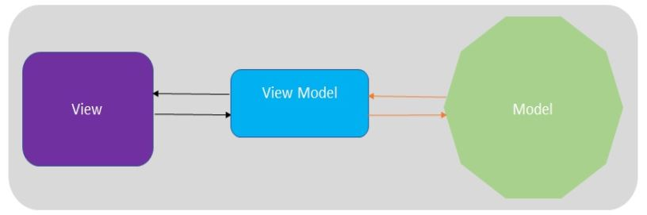

Reactive Programming Patterns and Techniques
- What is a stream?
A sequence of events is called a stream. A stream can emit three things: a value, an error, and a signal for completion.
- What are reactive properties?
-Reactive properties are binding properties that react when an event triggers.
- What is a reactive system?
On the basis of the Reactive Manifesto, we can conclude that reactive systems are as follows:
- Responsive: Reactive systems are event-based design systems because of this design approach; these systems are quick to respond to any request in a short time.
- Scalable: Reactive systems are reactive in nature. These systems can react to change the scalability rate by expanding or reducing the allocated resources.
- Resilient: A resilient system is one that would not stop, even if there is any failure/exception. Reactive systems are designed in such a way that, despite any exception or failure, the system will never die; it remains working.
- Message-based: Any data of an item represents a message and can be sent to a specific destination. When a message or data has arrived at a given state, an event that is a signal is emitted to notify that the message has been received. Reactive systems rely on this message-passing.
- What is meant by merging two reactive streams?
Merging two reactive steams is actually combining elements of two similar or different reactive streams into a new reactive stream. For example, if you have stream1, and stream2 then stream3 = stream1.merge(stream2), but the sequence of stream3 would not be in order.
- What is the MVVM pattern?
Model-View-ViewModel (MVVM) is one of the variations of Model-ViewController (MVC) to meet the modern UI development approach, where UI development is the core responsibility of designer/UI-developers, rather than application developers. In this approach of development, a designer who is more of a graphical enthusiast and is focused on making the user interface more attractive may or may not bother about the development part of the application. Generally, designers (UI persons) use various tools to make the user interfacemore attractive. The MVVM is defined as follows:
- Model: This is also called as a domain object and it holds data only; there is no business logic, validations, and so on.
- View: This is a representation of data for the end user.
- View Model: This separates View and Model; its main responsibility is to serve end users better stuff.
Patterns and Practices – MVVM
Ken Cooper and Ted Peters are the names behind the invention of the MVVM pattern. At the time of this invention, both Ken and Ted were architects at the Microsoft Corporation. They made this pattern to simplify the UI of event-driven programming. Later on, it was implemented in Windows Presentation Foundation (WPF) and Silverlight. The MVVM pattern can be elaborated with its various components as follows:
- Model: Holds data and does not care about any business logic in the application. I prefer to refer to this as a domain object because it holds the actual data of the application we are working with.
- View: This is a data representation for the end user to access via the UI. This simply displays the value of the data, and this value may or may not be formatted. For example, we can show the discount rate as 18% on the UI, while it would be stored as 18.00 in the model.
- ViewModel: This works as a middleman between View and Model. Its responsibility is to make the presentation better. In our previous example, where View shows the discount rate as 18% but Model has a discount rate of 18.00, it is the responsibility of View Model to format 18.00 to 18% so that View can display the formatted discount rate.  The preceding diagram is a pictorial view of MVVM, and it shows us that View Model separates View and Model. ViewModel also maintains the state and perform operations. This helps View to present the final output to the end user. The view is UI, which gets data and presents it to the end user. In the next section, we will implement the MVVM pattern using Angular.